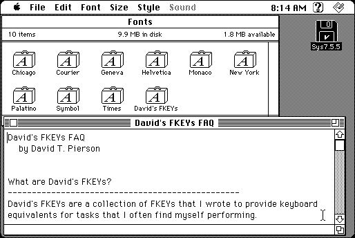

Download
DavidsFKEYs.zip (8K) David's FKEYs repackaged into a zipped hfs disk image and checksum file. The disk image can be mounted with Mini vMac.
DavidsFKEYs.sit.hqx (8K) David's FKEYs in the original format.
copyright: David T. Pierson
mod date: June 9, 1997
license: Freeware
from url :
David's FKEYs FAQ
Provides keyboard equivalents for move “frontmost window to the top left corner of the main screen”, “open the 'About this Macintosh' window”, “make the Finder the frontmost”, “make the next application” frontmost, and “send the frontmost window” behind. Tested only for “System 7.5 and later”. (I tried them briefly in System 7.0.1t and they seemed to work.)

If you find these downloads useful, please consider helping the Gryphel Project, which hosts them.
Here are the md5 checksums for the downloads, signed with Gryphel Key 5:
--------- GRY SIGNED TEXT --------- 9d3f8f0809f1cfbc3338d0f91f0c0651 DavidsFKEYs.zip f72446e01c4c2a3461e41c4597d3a042 DavidsFKEYs.sit.hqx ------- BEGIN GRY SIGNATURE ------- Gry/4Xa8CFcUzxdN/DHyH8ZlKjyxCUDEDvVejtVDgxWBEk9vsb8zmEmPqAjrLNxa D2PHYcd2G/gwAhbUon0gwfIty458ekEl0ntnMtCKnzjybfpKceOsIeQEKfxxPrQJ y3PtMtfJDbMnMc3jcRwR+QgLud+Wu5GwCDcTGNNdxDvDcAw5xlxPprdxH7swHPEw -------- END GRY SIGNATURE --------